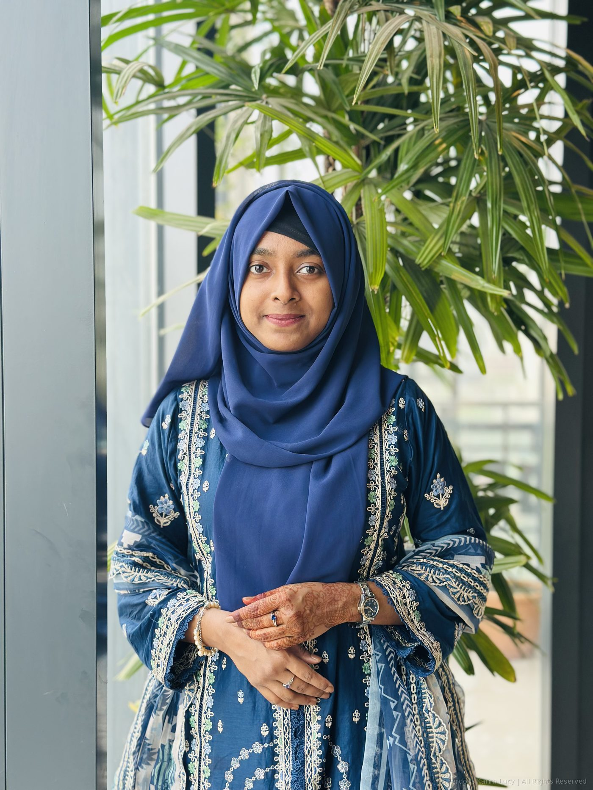
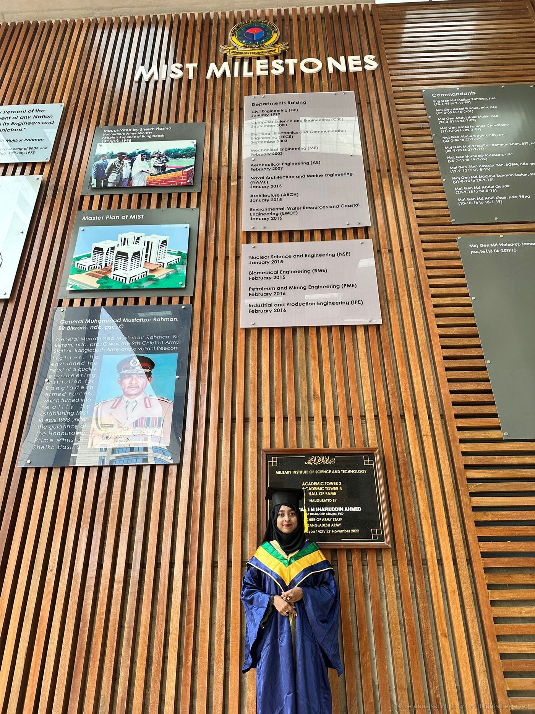
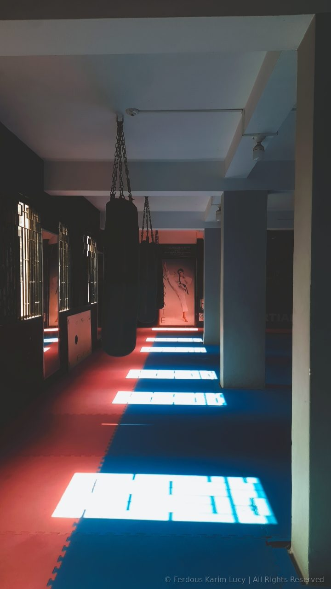

Biomedical Engineer · Researcher · Data Professional
I am a Biomedical Engineer with 4+ years of professional experience in medical data processing and pharmacovigilance, alongside a background in biomedical signal processing research. My undergraduate thesis on pediatric respiratory monitoring was published in a peer-reviewed biomedical journal.
My work sits at the intersection of engineering, clinical data, and scientific communication — from processing adverse event reports for global pharmacovigilance pipelines to building image processing systems in MATLAB for non-contact patient monitoring.
I am currently open to research collaborations and remote opportunities in biomedical engineering, medical data science, and related fields.
Academic Background

Professional History
Scholarly Work
Technical Competencies
Conferences & Training
Achievements & Activities
Life Outside the Lab

Get in Touch